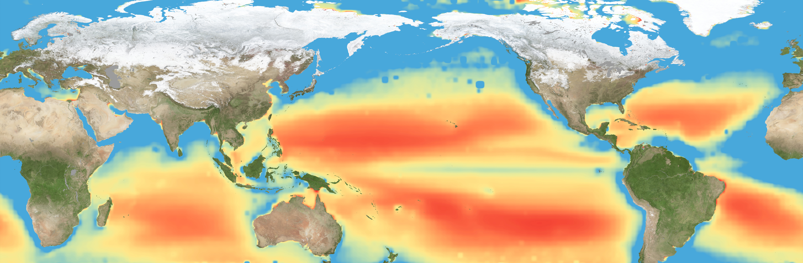
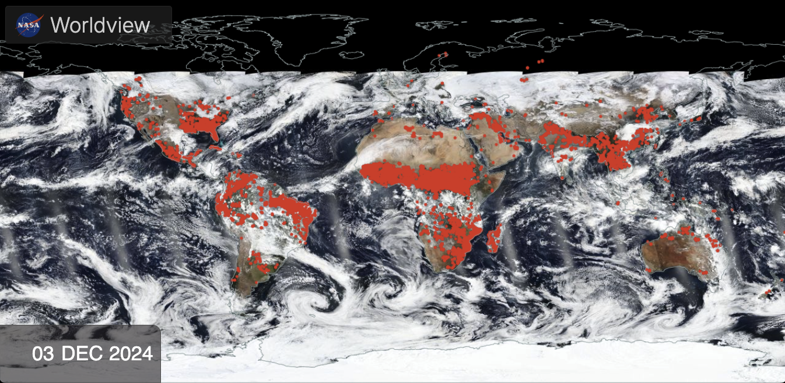

NASA Space Apps · Earth Information Center challenge
Hear the planet change.
NASA tells the story of our changing Earth through maps and images. The Jukebox turns those images into sound, so people who are blind or have low vision can explore the same science by ear and keyboard.

01 · The problem
Earth science is told in pictures.
Climate, air quality, wildfire and ocean health reach the public mostly as colour maps and satellite images. A colour scale means nothing to a screen reader, and alt text can summarise a map but cannot let someone explore it: where pollution peaks, how far it spreads, what is happening over their own region.
That shuts out students, researchers and citizens who are blind or have low vision from evidence that shapes decisions about their health and their communities.
Who is affected
- 2.2 billion people live with a near or distance vision impairment.
- 295 million people have moderate or severe distance vision impairment.
- 43 million people are blind, a number projected to reach about 60 million by 2050.
02 · How it works
From pixels to pitch in four steps.
-
Start with a NASA image
Each dataset is a published NASA visualization with its colour scale, such as GEOS-CF carbon monoxide or VIIRS active fires.
-
Choose a region
Move between continents, oceans or a map grid with the arrow keys or buttons. Every move is announced to your screen reader.
-
Listen to the data
Press Space and the Jukebox sweeps the region west to east. Colour becomes pitch: low values play low notes, high values rise.
-
Learn the scale by ear
Before exploring, play the audio legend: the full colour scale as one rising sweep, with values and units available to your screen reader.
Keys ← → ↑ ↓ move · Space play region · M mute · Home start · End leave the map
03 · The solution
Three NASA images, ready to hear.
Each one is a real NASA visualization converted into sound. Pick one to explore.
-

Ocean nutrient stress
Two decades of data showing where warming water limits the nutrients that feed marine life.
- You hear
- Low notes for cool, nutrient-rich water; high notes for warm, stressed water.
- Explore by
- Ocean basin: Pacific, Atlantic, Indian, Southern, Arctic
-
Carbon monoxide air quality
Pollution from traffic, industry and wildfires, and how far it drifts across continents.
- You hear
- 40 parts per billion as a low note, up to 500 as a high note.
- Explore by
- Continent: seven regions from North America to Antarctica
-

Active wildland fires
A single day of fire detections from space, from agricultural burning to wildfires.
- You hear
- Pitch rises as fire detections grow denser.
- Explore by
- Map grid: eight zones, four across and two down
Put on headphones and start listening.
Works with a keyboard and a screen reader. No mouse or sight needed.
Try the Jukebox